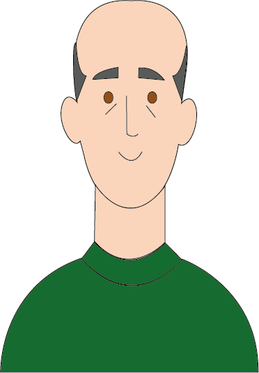

Giovanni Battista Piranesi


Nascita:
4 Ottobre 1720, Venezia, Italia
Morte:
9 Novembre 1778, Venezia, Italia
Corrente:
Neoclassicismo



Opere più famose: Arco di trionfo 1745-1750; Carceri 1750 e 1761
Curiosità: Si fece issare con una cesta lungo la Colonna di Traiano, che è alta 40 metri, per riprodurre su carta ogni singolo dettaglio del racconto (le conquiste in Dacia dell’imperatore) in rilievo. Prima di lui ci aveva provato un francese, che però rinunciò subito, perché temeva di rompersi l’osso del collo.
Citazione: “…è così pieno dell’aria, del cielo, del suolo di Roma, da ritrarla con prodigiosa fedeltà, e da farla comparire come per incanto innanzi agli occhi di chi non l’ha ancora mai veduta…” dice di Piranesi lo scrittore Giuseppe Rovani.